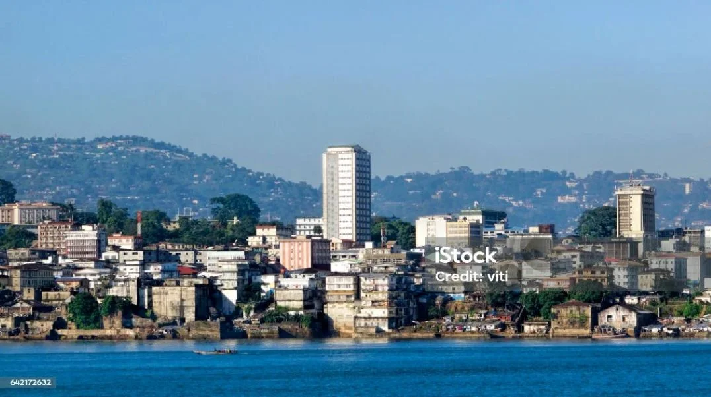

Freetown Chamber of Commerce

Building Business. Building Community.
Join the ChamberUpcoming Events
🤝 Business Networking Breakfast
July 25 - 8:00 AM @ Freetown City Hall
Connect with over 100 local business owners. Free for members.
📈 Small Business Growth Workshop
Aug 02 - 2:00 PM @ Chamber Office
Learn marketing and financing strategies for 2026.
Weather in Freetown
Data from OpenWeatherMap